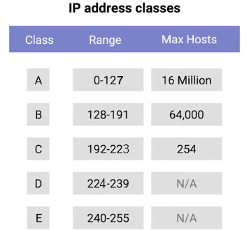

Semana 2M2
La capa de red
Direcciones IP
Las direcciones IP tienen números de 32 bits compuestos por 4 octetos y cada octeto se describe normalmente en
números decimales. Ocho bits de datos, o un solo octeto, pueden representar todos los números decimales del 0 al 255.
Este formato se conoce como notación decimal con puntos.

Es importante enfatizar que las direcciones IP pertenecen a las redes, no a los dispositivos conectados a esas redes.
De esta forma, tu laptop siempre tendrá la misma dirección MAC, no importa donde la utilices. Pero una dirección IP
asignada en un cibercafé será diferente a la que tendría tu laptop si estuvieras en casa.
Puedes conectar un nuevo dispositivo en cualquiera de las redes modernas, y se le asignará una dirección IP
automáticamente a través de una tecnología conocida como Protocolo de configuración dinámica de host
(DHCP). Una dirección IP asignada de esta manera se conoce como una dirección IP dinámica. Lo
contrario de esto se conoce como una dirección IP estática, la que debe configurarse en un nodo de
manera manual. En la mayoría de los casos, las direcciones IP estáticas están reservadas para servidores y
dispositivos de red, mientras que las IP dinámicas están reservadas para los clientes. Sin embargo, existen ciertas
situaciones en las que esto no es del todo cierto.
Datagramas de IP y encapsulación
En virtud del protocolo IP, a un paquete se lo conoce, por lo general, como un datagrama IP. Las dos secciones
principales de un datagrama IP son el encabezado y la carga útil.

• El primer campo es de 4 bits, e indica qué versión de protocolo de Internet se está utilizando. La
versión más común de IP es la versión cuatro o IPv4.
• Después del campo de versión, tenemos el campo de longitud de encabezado. Este también es un campo
de 4 bits que muestra qué tan largo es todo el encabezado. Casi siempre tiene una longitud de 20 bytes cuando se
trata de IPv4. De hecho, 20 bytes es la longitud mínima de un encabezado IP.
• A continuación, tenemos el campo Tipo de servicio. Estos 8 bits pueden usarse para especificar
detalles sobre la calidad de servicio o las tecnologías QoS. Lo importante de la QoS es que hay servicios que
permiten a los routers tomar decisiones sobre qué datagrama IP puede ser más importante que otros.
• El siguiente campo es un campo de 16 bits. conocido como el campo Longitud total. Se utiliza para
indicar la longitud total del datagrama IP al que está asociado.
• El campo de identificación es un número de 16 bits que se utiliza para agrupar mensajes. Dado que
el campo Longitud total es de 16 bits, y este campo indica el tamaño de un datagrama individual, el tamaño máximo de
un solo datagrama es el número más grande que se puede representar con 16 bits: 65,535. Si la cantidad total de datos
que debe enviarse es más grande de lo que puede caber en un solo datagrama, la capa IP necesitará dividir estos datos
en muchos paquetes individuales. Cuando esto sucede, el campo de identificación se utiliza para que el extremo
receptor entienda que cada paquete con el mismo valor en ese campo es parte de la misma transmisión.
• El campo Indicador se utiliza para indicar si un datagrama puede fragmentarse, o para indic
ar que
el datagrama ya fue fragmentado. La fragmentación es el proceso de tomar un solo datagrama IP y dividirlo en varios
datagramas más pequeños. Si bien la mayoría de las redes operan con configuraciones similares en términos de cuál es
el tamaño permitido para un datagrama IP, en algunas ocasiones podría haber configuraciones diferentes. Si un
datagrama tiene que cruzar desde una red que permite un datagrama de mayor tamaño a otra red con un menor tamaño de
datagrama, se deberá fragmentar el datagrama en otros más pequeños.
• El campo Desplazamiento de fragmentación contiene valores utilizados por el extremo receptor para
tomar todas las partes de un paquete fragmentado y reunirlos en el orden correcto.
• El campo Tiempo de vida o TTL es un campo de 8 bits que indica cuántos saltos de
router puede cruzar un datagrama antes de ser desechado. Cada vez que un datagrama llega a un nuevo router, dicho
router disminuye el campo TTL en una unidad. Una vez que este valor llega a cero, el router sabe que no tiene que
reenviar más el datagrama. El objetivo principal de este campo es asegurarse de que cuando haya un error de
configuración en el enrutamiento que cause un bucle sin fin, los datagramas no se queden toda la eternidad tratando
de llegar a su destino.
• El campo Protocolo es otro campo de 8 bits que contiene datos sobre qué protocolo de capa de
transporte se está usando. Los protocolos de capa de transporte más comunes son TCP y UDP.
• El campo Suma de verificación de encabezado es una suma de verificación del contenido de todo el
encabezado del datagrama IP. Funciona de manera muy similar al campo de suma de verificación de Ethernet que
analizamos en el último módulo. Dado que el campo TTL debe recalcularse en cada router que toque un datagrama, el
campo Suma de verificación también cambia obligatoriamente.
• Los campos de las direcciones IP de origen y de destino. Recuerda que una
dirección IP es un número de 32 bits, por lo que estos campos tengan una longitud de 32 bits.
• El campo Opciones de IP es un campo opcional y se utiliza para establecer características
especiales para datagramas usados principalmente con fines de prueba.
• Suele ir seguido de un campo de relleno. Dado que el campo Opciones de IP es opcional y de
longitud variable, el campo de relleno es solo una serie de ceros utilizados para asegurarse de que el encabezado
tenga el tamaño total indicado.
Quizás recuerdes que en nuestro desglose de una trama de Ethernet mencionamos una sección que describimos como la
sección de carga útil de datos. Un datagrama IP es exactamente esto, y este proceso se conoce como
encapsulación. Todo el contenido de un datagrama IP se encapsula como la carga útil de una trama
Ethernet. Tal vez hayas notado que nuestro datagrama IP también tiene una sección de carga útil. El contenido de esta
carga útil es la totalidad de un paquete TCP o UDP.

Clases de direcciones IP
Las direcciones IP se pueden dividir en dos secciones, la ID de red y la ID de host. Hay tres tipos principales de
clases de dirección. Clase A, clase B, y clase C. Las direcciones de clase A son aquellas en los que
se utiliza el primer octeto para la ID de red, y los tres últimos se utilizan para la ID de host.
Las direcciones de clase B son donde se utilizan los dos primeros octetos para la ID de red, y los
dos segundos se utilizan para la ID de host.
Las direcciones de clase C son aquellas donde se utilizan los primeros tres octetos para la ID de
red y solo se utiliza el octeto final para la ID de host.
Cada clase de dirección representa una red de tamaño muy
diferente. Por ejemplo, dado que una red de clase A tiene un
total de 24 bits de espacio de ID de host, esto da un total de 2 a la 24, o 16,777,216 direcciones individuales. Una
red de clase C que solo tiene ocho bits de espacio de ID de host esto da como resultado 2 a la octava, o 256
direcciones.
Si el primer bit de una dirección IP es un 0, pertenece a una red de clase A; si los primeros bits son 1, 0,
pertenece a una red de clase B. Por último, si los primeros bits son 1, 1, 0, pertenece a una red de clase C.
Cada octeto en una dirección IP tiene ocho bits, lo que significa que cada octeto puede tomar un valor entre 0 y
255.
Si el primer bit tiene que ser un 0, como lo es con las direcciones de clase A, los valores posibles para el primer
octeto son de 0 a 127. Esto significa que cualquier dirección IP con un primer octeto con uno de esos valores es una
dirección de clase A.
Las direcciones de clase B están restringidas a las que comienzan con un valor del primer octeto de 128 a 191, y las
direcciones de clase C comienzan con un valor del primer octeto de 192 a 223.
Las direcciones de clase D siempre comienzan con los bits 1110, y se utilizan para multidifusión, que es cómo un solo
datagrama de IP se puede enviar a una red entera a la vez. Estas direcciones comienzan con valores decimales entre
224 y 239.
Por último, las direcciones de clase E conforman todas las direcciones IP restantes, pero no están asignadas y solo
se utilizan con fines de prueba.

Este sistema de clases fue reemplazado en su mayoría por un sistema conocido como CIDR o
"enrutamiento entre dominios sin clases".
Protocolo de resolución de direcciones
Ahora entiendes cómo se utilizan ambas direcciones MAC en el enlace de datos y cómo se utilizan las direcciones IP en
la capa de red.
ARP es un protocolo utilizado para descubrir la dirección de hardware de un nodo con una dirección
IP determinada. Una vez que un datagrama IP se ha formado completamente necesita ser encapsulado dentro de una trama
Ethernet. Esto significa que el dispositivo transmisor necesita una dirección MAC de destino para completar el
encabezado de la trama Ethernet. Casi todos los dispositivos conectados a la red conservan la tabla ARP local. La
tabla ARP es solo una lista de direcciones IP y las direcciones MAC asociadas con ellas.
Digamos que queremos enviar algunos datos a la dirección IP 10.20.30.40. Puede ocurrir que este destino no tenga una
entrada en la tabla ARP. Cuando esto sucede, el nodo que quiere enviar datos envía un mensaje de difusión
ARP a la dirección de transmisión MAC que son todos los EFH. Este tipo de mensajes de difusión ARP son
entregados a todas las computadoras de la red local. Una vez la interfaz de red a la que se le ha asignado la IP
10.20.30.40 recibe esta transmisión ARP, esta envía lo que se conoce como una respuesta ARP. Este mensaje de
respuesta contendrá la dirección MAC para la interfaz de red en cuestión. Ahora la computadora transmisora sabe qué
dirección MAC poner en el campo de dirección de hardware de destino y así la trama Ethernet está lista para la
entrega. También es probable que almacene esta dirección IP en su tabla ARP local para que no tenga que enviar una
transmisión ARP la próxima vez que necesite comunicarse con esta IP. Las entradas de la tabla ARP generalmente
caducan después de un corto período de tiempo para garantizar que los cambios en la red se tengan en cuenta.
Subnetting
 Índice
Índice